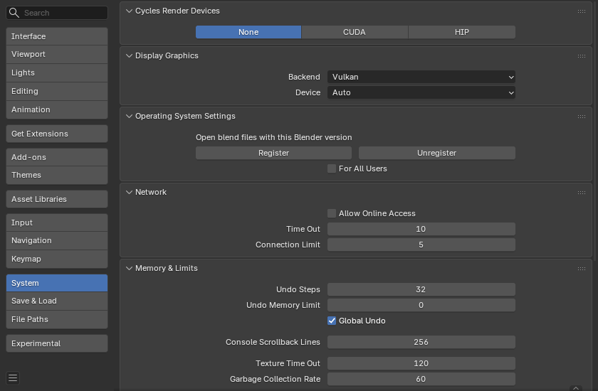

System¶
Phần System cho phép bạn thiết lập các tùy chọn card đồ họa, giới hạn bộ nhớ & cài đặt âm thanh.
Nếu phần cứng của bạn không hỗ trợ một số tùy chọn được mô tả trong trang này, chúng sẽ hoặc không hiển thị, hoặc được điều chỉnh lại khi khởi động.

Phần System trong Preferences.¶
Cycles Render Devices¶
Thay đổi Computing Device mà render engine Cycles dùng để render hình ảnh. Cycles có thể dùng CPU hoặc một số GPU nhất định để render hình ảnh; để biết thêm thông tin, xem trang GPU Rendering.
- None:
Khi đặt thành None hoặc khi tùy chọn duy nhất là None: CPU sẽ được dùng làm thiết bị tính toán cho Cycles.
- CUDA:
Nếu hệ thống có thiết bị NVIDIA CUDA tương thích, nó sẽ khả dụng như một tùy chọn để render bằng Cycles.
- OptiX:
Nếu hệ thống có thiết bị NVIDIA OptiX tương thích, nó sẽ khả dụng như một tùy chọn để render bằng Cycles.
- HIP:
Nếu hệ thống có thiết bị AMD HIP tương thích, nó sẽ khả dụng như một tùy chọn để render bằng Cycles.
- oneAPI:
Nếu hệ thống có thiết bị Intel oneAPI tương thích, nó sẽ khả dụng như một tùy chọn để render bằng Cycles.
- Metal:
Nếu hệ thống có thiết bị Apple Metal tương thích, nó sẽ khả dụng như một tùy chọn để render bằng Cycles.
- Distribute Memory Across Devices
Phân bổ tài nguyên qua nhiều GPU thay vì nhân đôi dữ liệu, nhờ đó giải phóng không gian cho các scene lớn hơn. Lưu ý rằng để tùy chọn này khả dụng, các GPU phải được kết nối với nhau bằng một giao thức truyền thông băng thông cao.
Hiện chỉ hỗ trợ NVLink trên các GPU NVIDIA.
- Embree on GPU
Cho phép dùng ray tracing bằng phần cứng trên các GPU Intel, mang lại hiệu năng tổng thể tốt hơn.
Chỉ được hỗ trợ với các thiết bị render oneAPI.
- HIP RT
Tăng tốc render bằng cách bật ray tracing phần cứng của AMD trên RDNA2 trở lên.
Tính năng này chỉ khả dụng khi dùng thiết bị render HIP.
- MetalRT
MetalRT cho ray tracing dùng ít bộ nhớ hơn với các scene dùng nhiều curve, và có thể cho hiệu năng tốt hơn trong một số trường hợp cụ thể.
- Off:
Tắt MetalRT (dùng bố cục BVH2 cho các truy vấn giao cắt).
- On:
Bật MetalRT cho các truy vấn giao cắt.
- Auto:
Tự động chọn phương pháp giao cắt nhanh nhất.
Display Graphics¶
Các cài đặt kiểm soát cách Blender vẽ giao diện người dùng và các đồ họa hiển thị khác. Những tùy chọn này có thể ảnh hưởng đến hiệu năng và tính tương thích.
- Backend
Chọn API đồ họa được dùng để vẽ giao diện và render nội dung hiển thị.
Việc đổi backend yêu cầu khởi động lại Blender để thay đổi có hiệu lực.
- OpenGL:
Dùng backend OpenGL. Đây là backend truyền thống, tương thích với nhiều loại hệ thống.
- Vulkan:
Dùng backend Vulkan. Vulkan có thể mang lại hiệu năng cải thiện và hỗ trợ tốt hơn cho các tính năng GPU hiện đại, nhưng độ tương thích có thể khác nhau tùy hệ thống và driver.
- Device Vulkan
Chỉ định GPU nào sẽ được dùng cho các thao tác vẽ hiển thị.
Cài đặt này hữu ích cho các hệ thống có nhiều GPU (ví dụ: tích hợp + rời) mà bạn muốn ép Blender dùng một GPU cụ thể để vẽ UI.
Việc đổi backend yêu cầu khởi động lại Blender để thay đổi có hiệu lực.
- Auto:
Tự động chọn GPU phù hợp nhất dựa trên cấu hình hệ thống và mức hỗ trợ của driver.
Cài đặt hệ điều hành¶
Đặt bản cài đặt này làm Blender mặc định (chỉ MS-Windows & Linux).
Trên Linux, nếu Blender được cài qua trình quản lý gói như Snap, việc liên kết file sẽ do trình quản lý gói xử lý.
- Register
Đặt bản Blender đang dùng thành mặc định cho việc tạo hình thu nhỏ và mở các blend-file.
- Unregister
Gỡ liên kết file & trình tạo hình thu nhỏ.
- For All Users
Đăng ký Blender cho tất cả người dùng, yêu cầu quyền nâng cao.
Đăng ký trên Linux
Các file thiết lập nằm dưới: /usr/local cho tất cả người dùng, nếu không thì dùng ~/.local.
Một desktop file & biểu tượng được cài đặt để ứng dụng xuất hiện trong các launcher.
Liên kết file cho
*.blendđược thiết lập.Trình tạo hình thu nhỏ được cài đặt để hình thu nhỏ của blend-file hiển thị trong các trình quản lý file (chỉ For All Users).
Network¶
- Allow Online Access
Cho phép Blender truy cập internet.
Các add-on tuân theo cài đặt này sẽ chỉ kết nối internet khi được bật. Tuy nhiên, Blender không thể ngăn các add-on của bên thứ ba vi phạm quy tắc này.
- Time Out
Thời gian (tính bằng giây) mà các thao tác trực tuyến có thể chờ trước khi hết hạn.
Dùng mặc định của hệ thống khi bằng không.
- Connection Limit
Số kết nối đồng thời tối đa mà một thao tác trực tuyến có thể tạo.
Không giới hạn số kết nối khi bằng không.
Memory & Limits¶
- Undo Steps
Số bước Undo khả dụng.
- Undo Memory Limit
Mức sử dụng bộ nhớ tối đa tính bằng Mb (0 là không giới hạn).
- Global Undo
Điều này cho phép Blender lưu lại các thao tác được thực hiện khi bạn không ở Edit Mode. Ví dụ: duplicate object, thay đổi cài đặt panel hay chuyển đổi giữa các chế độ.
Cảnh báo
Mặc dù việc tắt tùy chọn này tiết kiệm được bộ nhớ, nó làm panel Adjust Last Operation ngừng hoạt động, đồng thời ngăn không cho thay đổi các tùy chọn công cụ trong một số trường hợp. Với cách sử dụng thông thường, tốt nhất là giữ tùy chọn này ở trạng thái bật.
Xem thêm
- Console Scroll-back Lines
Số dòng được đệm trong bộ nhớ của cửa sổ console. Hữu ích cho mục đích gỡ lỗi và render bằng dòng lệnh.
- Texture Time Out
Thời gian (giây) tính từ lần truy cập cuối cùng của một GL texture, sau đó nó sẽ được giải phóng. Đặt thành 0 để texture luôn được cấp phát.
- Garbage Collection Rate
Số giây giữa mỗi lần chạy trình thu gom rác GL texture.
- VBO Time Out
Thời gian (giây) tính từ lần truy cập cuối cùng của một GL vertex buffer object (VBO), sau đó nó sẽ được giải phóng (đặt thành 0 để giữ VBO được cấp phát).
- Garbage Collection Rate
Số giây giữa mỗi lần chạy trình thu gom rác của GL vertex buffer object.
- Shader Compilation Method
Định nghĩa phương pháp dùng để biên dịch song song các GPU shader.
Tùy chọn này không khả dụng trên macOS và yêu cầu dùng backend OpenGL.
Việc thay đổi cài đặt này yêu cầu khởi động lại Blender để có hiệu lực.
- Thread:
Dùng nhiều thread trong một tiến trình duy nhất để biên dịch shader đồng thời. Phương pháp này tiết kiệm bộ nhớ hơn nhưng có thể chậm hơn trên một số hệ thống.
- Subprocess:
Dùng nhiều tiến trình con riêng biệt để biên dịch shader song song. Cách này có thể nhanh hơn, đặc biệt trên hệ thống nhiều lõi, nhưng tiêu tốn RAM đáng kể hơn.
- Threads / Subprocesses
Số thread hoặc tiến trình con biên dịch shader sẽ dùng. Giá trị tối đa bị giới hạn bởi số lõi CPU logic của hệ thống.
Tăng số này có thể rút ngắn thời gian biên dịch shader với cái giá là mức dùng bộ nhớ cao hơn. Giá trị 0 cho phép Blender tự động chọn con số phù hợp dựa trên cấu hình hệ thống.
Tùy chọn này không khả dụng trên macOS và yêu cầu dùng backend OpenGL.
Việc thay đổi cài đặt này yêu cầu khởi động lại Blender để có hiệu lực.
- Geometry Nodes Stack Limit
Kích thước tối đa xấp xỉ của call stack được dùng cho việc tính toán node group. Ví dụ, điều này tương ứng với số node group lồng nhau được phép. Đặt giá trị này quá cao có thể gây sập chương trình do cạn bộ nhớ stack.
Video Sequencer¶
- Memory Cache Limit
Giới hạn trên của bộ nhớ đệm (cache) của Video Sequencer và Movie Clip Editor (tính bằng megabyte). Để Clip editor và Sequencer hoạt động tối ưu, khuyến nghị dùng giá trị cao.
- Proxy Setup
Khi nào và theo cách nào các Proxy được tạo.
- Automatic:
Xây dựng proxy cho các strip phim và hình ảnh được thêm vào ở từng kích thước xem trước.
- Manual:
Thiết lập proxy thủ công.
Xem thêm
Sound¶
Panel này chứa các cài đặt âm thanh cho việc phát lại trực tiếp trong Blender và chỉ khả dụng khi thiết bị khác None. Để điều khiển các cài đặt này khi xuất âm thanh, xem Encoding Panel và Audio Panel.
- Audio Device
Thiết lập audio engine dùng để xử lý và xuất âm thanh.
- None:
Không hỗ trợ phát âm thanh (các strip âm thanh vẫn có thể được tải và render bình thường).
- CoreAudio:
Trên macOS, CoreAudio là API âm thanh gốc. Đây là cài đặt mặc định cho người dùng macOS và nên được ưu tiên.
- PulseAudio:
PulseAudio là sound server được dùng phổ biến nhất trên các bản phân phối Linux hiện đại. Nếu PulseAudio khả dụng, đây nên là cài đặt được ưu tiên trên Linux.
- WASAPI:
Trên Windows, WASAPI là API âm thanh gốc được giới thiệu cùng Windows Vista. Đây là cài đặt mặc định cho người dùng Windows và nên được ưu tiên.
- Jack:
Audio engine chuyên nghiệp chất lượng cao, cần một server được cấu hình đúng đang chạy trên hệ thống của bạn. Hỗ trợ đồng bộ hóa chính xác với các ứng dụng âm thanh chuyên nghiệp khác thông qua Jack.
- OpenAL:
Khả dụng trên mọi nền tảng trong trường hợp các engine gốc không hoạt động. Âm thanh 3D khi phát lại có thể nghe khác so với khi render.
- SDL:
Dùng Simple Direct Media Layer API từ libsdl.org, API này hỗ trợ mọi nền tảng. Chất lượng có thể thấp hơn nên chỉ nên dùng như phương án dự phòng.
- Channels
Số lượng "vị trí" nguồn âm thanh để xuất.
- Mono:
Xuất một kênh âm thanh duy nhất.
- Stereo:
Xuất hai kênh âm thanh; điển hình là kênh trái và kênh phải.
- 4 Channels:
Xuất bốn kênh âm thanh.
- 5.1 Surround:
Xuất năm kênh âm thanh với một kênh LFE.
- 7.1 Surround:
Xuất bảy kênh âm thanh với một kênh LFE.
- Mixing Buffer
Thiết lập số mẫu (sample) được dùng bởi bộ đệm trộn âm thanh. Kích thước bộ đệm lớn hơn có thể gây vấn đề về độ trễ, nhưng nếu bạn nghe thấy tiếng tách tách hoặc các vấn đề khác, hãy thử tăng kích thước.
- Sample Rate
Thiết lập tần số lấy mẫu của âm thanh.
- Sample Format
Thiết lập định dạng mẫu âm thanh (sample format).